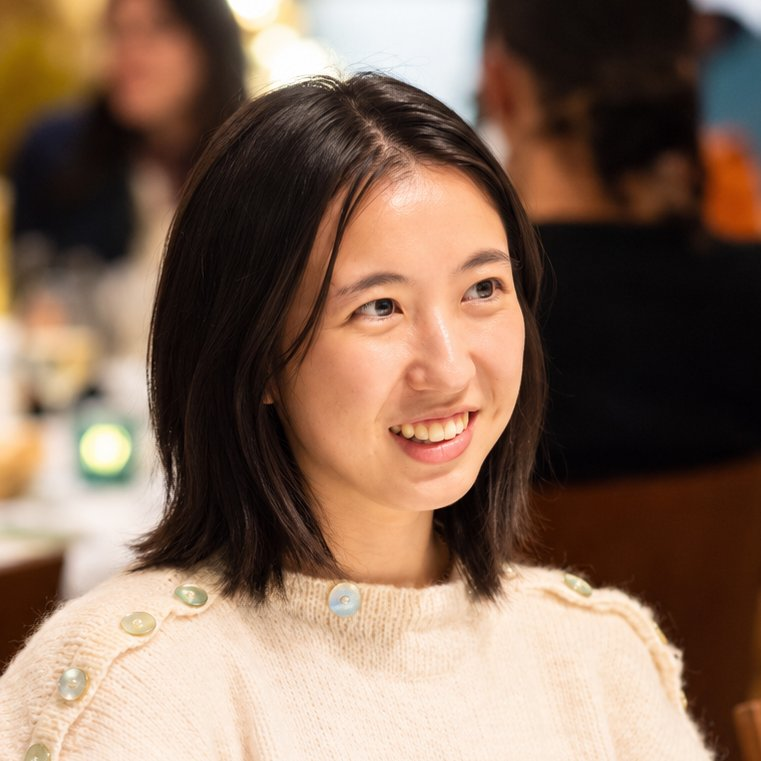

Taylor Naomi Sihavong

I'm a product designer, founder, and human augmenter. I design new tools and systems to unlock human capacity so we can be the builders of our own worlds.
I'm currently co-founding a startup that allows anyone to build hardware fast, from sketch to production.
Reach out by email or LinkedIn (opens in a new tab).
01
Previously
I was a cohort facilitator under Rob Reich and Mehran Sahami for the Ethics, Technology, and Public Policy for Practitioners course at the Stanford McCoy Family Center for Ethics in Society (opens in a new tab).
I co-founded the tech education nonprofit Code.X (opens in a new tab), which provides tech, design, and entrepreneurship education to youth in fragile and conflict-affected regions worldwide.
I pushed exploratory design research and data-driven UI/UX design as a product design and research lead at Pear Therapeutics, Change Healthcare (opens in a new tab), Agathos (opens in a new tab), and Akido Labs (opens in a new tab).
I organized community-focused design research for food assistance users as a NEXT Fellow at the Stanford Byers Center for Biodesign (opens in a new tab).
I taught classrooms of students ranging from 2 to 18 years old as a youth educator and STEM curriculum designer for Paltel Group and Stanford Bing Nursery School (opens in a new tab).
I researched ultra-affordable agricultural structures for small farmers in Telangana, India, as a design engineer for Kheyti (opens in a new tab).
I did a number of scientific side-quests exploring space sciences and astrobiology, preventative medicine, and behavioral sciences as a quantitative researcher and data analyst at NASA's Ames Research Center (opens in a new tab), Stanford Sarafan ChEM-H (opens in a new tab), Stanford School of Medicine (opens in a new tab), University of Hawaiʻi Cancer Center (opens in a new tab), and the Stanford PPRG Lab (opens in a new tab).
02
Talks
- Impact Economy: Affecting Change Through Youth Education , Forbes Under 30 Summit2026
- Beyond Borders: How US-based Nonprofits are Driving Global Change , Gratitude Network Forum2025
- Idea Forum: Impact , Forbes 30/50 Summit2025
- Breaking Barriers: Fostering Tech Skills in Emerging Markets (opens in a new tab) , World Bank EduTech Podcast2024
03
Press
- Education: Bringing access and opportunity to the classroom and beyond (opens in a new tab) , Forbes2025
- Supporting Schoolchildren on the Path to a Technological Future: Code for Ukraine Camp Held at UCU (opens in a new tab) , Ukrainian Catholic University2024
- Korca hosts "Code for Albania," the summer camp that brought 100 children from all over the country and 10 instructors from the USA (opens in a new tab) , ABC News2022
- A Leading Model in Sustainable Development (opens in a new tab) , This Week in Palestine2022
- Coding in Palestine: How Tech Education Keeps Girls Safe and Expands Opportunities (opens in a new tab) , Friends of UNFPA2021
- Innovative Greenhouses Help Farmers Adapt to Climate Change (opens in a new tab) , National Geographic2018
- Biodesign NEXT Facilitates Student Plans to Help Low-Income Californians Eat Healthy (opens in a new tab) , Stanford Byers Center for Biodesign2017
04
Awards
- Education 2030 UN: SDG4 Youth & Student Network Member (opens in a new tab)2026
- Gratitude Network: Social Disruptor Award2025
- One Young World: Chanel Scholar2025
- Forbes: 30 Under 30 North America in Education (opens in a new tab)2025
- Gratitude Network: Gratitude Fellow (opens in a new tab)2024
- Fellowships at Auschwitz for the Study of Professional Ethics: Design and Technology Fellow (opens in a new tab)2024
- ADPList: Top 1% ADPList Mentor in Design (opens in a new tab)2023
05
& More
I enjoy being tossed in the deep end, learning on the fly, and untangling complex problems. I work best with small, fast-paced teams. I hold a Bachelor of Science from Stanford University in Product Design Engineering and consider myself both a builder and an artist. I've been described as ambitious yet down-to-earth, reliable, and purpose-driven.
Thanks for reading this page, which is really just a collection of work I'm proud of.